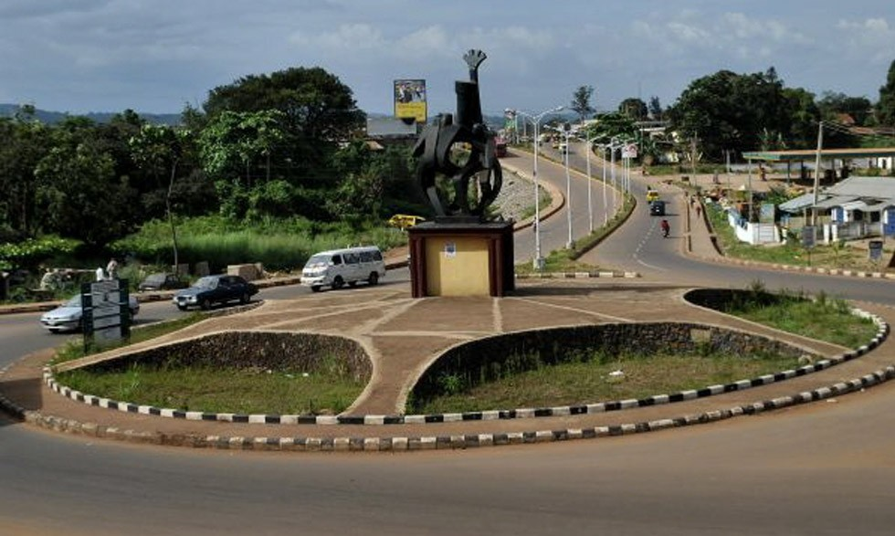

About Me
I'm Jude Iduh. I hail from Enugu, Nigeria. I'm a passionate sports content creator dedicated to delivering exciting, engaging, and insightful content for sports fans. Whether it's game analysis, player highlights, or trending topics, my goal is to bring the latest and most relevant sports stories to life. I specialize in creating content across social media platforms, blogs, YouTube, and podcasts, connecting with fans through commentary, predictions, and behind-the-scenes coverage.
With a strong focus on both entertainment and analysis, I break down key moments in games, provide in-depth commentary, and keep fans informed on the latest developments in the sports world. By staying ahead of trends and tapping into emerging sports culture, I deliver fresh and engaging content that resonates with audiences of all types.
Through my work, I aim to bridge the gap between fans and the sports they love, creating an interactive and dynamic space where everyone can share in the excitement of the game.
Enugu, Nigeria

Enugu is a vibrant city located in southeastern Nigeria, known as the "Coal City" due to its rich history in coal mining. It serves as the capital of Enugu State and is one of the key urban centers in the region. Enugu's economy is driven by industries such as coal, agriculture, and manufacturing, with a growing focus on trade and services.
The city is a cultural hub, home to various ethnic groups, predominantly the Igbo people, and is renowned for its festivals, music, and art. Enugu boasts several landmarks, including the Awhum Waterfall, the National Museum of Unity, and the famous Ngwo Pine Forest.
Enugu is also an important educational center, housing institutions like the University of Nigeria, Nsukka, and several other tertiary schools. The city has a relatively calm, cosmopolitan atmosphere, with modern infrastructure, shopping malls, and entertainment venues.
With its blend of historical significance, economic potential, and cultural richness, Enugu remains a key city in Nigeria's southeastern region.